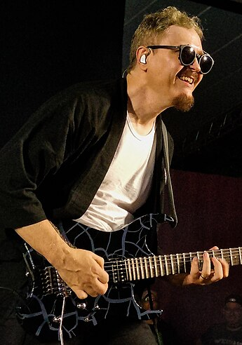
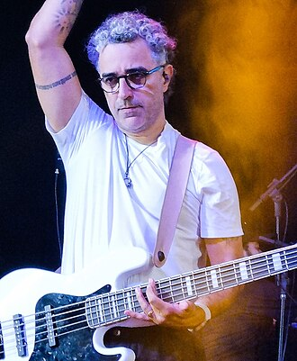
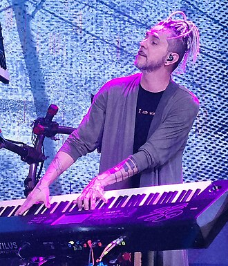

Atuais:
Juninho Afram
Ficha
- Nome completo: José Afram Júnior
- Conhecido como: Juninho Afram
- Nascimento: 9 de outubro de 1970 (54 anos)
- Origem: São Paulo, SP
- País: Brasil
- Ocupação: Guitarrista, cantor e compositor
- Extensão vocal: Tenor
Duca Tambasco
Ficha
- Nome completo: Eduardo Tambasco
- Conhecido como: Duca tambasco
- Nascimento: 15 de abril de 1976 (48 anos)
- Origem: São Paulo, SP
- País: Brasil
- Ocupação: Cantor, compositor, produtor musical, arranjador e baixista
Jean Carllos
Ficha
- Nome completo: Jean Carllos Lemes Miranda
- Conhecido como: Jean Carlos
- Nascimento: 24 de setembro de 1974 (50 anos)
- Origem: Brasília, DF
- País: Brasil
- Ocupação: Músico, compositor e baixista
Anteriores:
- Túlio Régis - vocal, compositor (1987-1992)
- Wagner García - baixo (1987-1993)
- Luciano Manga - vocal (1987-1997)
- Walter Lopes - bateria, vocal (1987-2002)
- PG -vocal, violão (1997-2003)
- Alexandre Aposan - bateria (2006-2014)
- Mauro Henrique- vocal, violão (2008-2020)
Músicos de Apoio:
- James Conway - guitarra base (1989-1992)
- Márcio "Woody" de Carvalho - teclado (1989-1994)
- Marcos Pereira - guitarra base, violão (1993-1994)
- Johnny Mazza - bateria (2002-2003)
- Lufe - bateria (2002-2006; 2020-2024)
- Déio Tambasco - guitarra base (2004-2006; 2023-2024)
- Celso Machado - guitarra base (2006-2015; 2024)
- Maick Sousa - bateria (2014-2018)
- Mateus Asato - guitarra base (2020-2023)
- Walter Lopes - bateria (2020-2023)
- PG - vocal, violão (2020-presente)
- Luciano Manga - vocal (2023-2024)